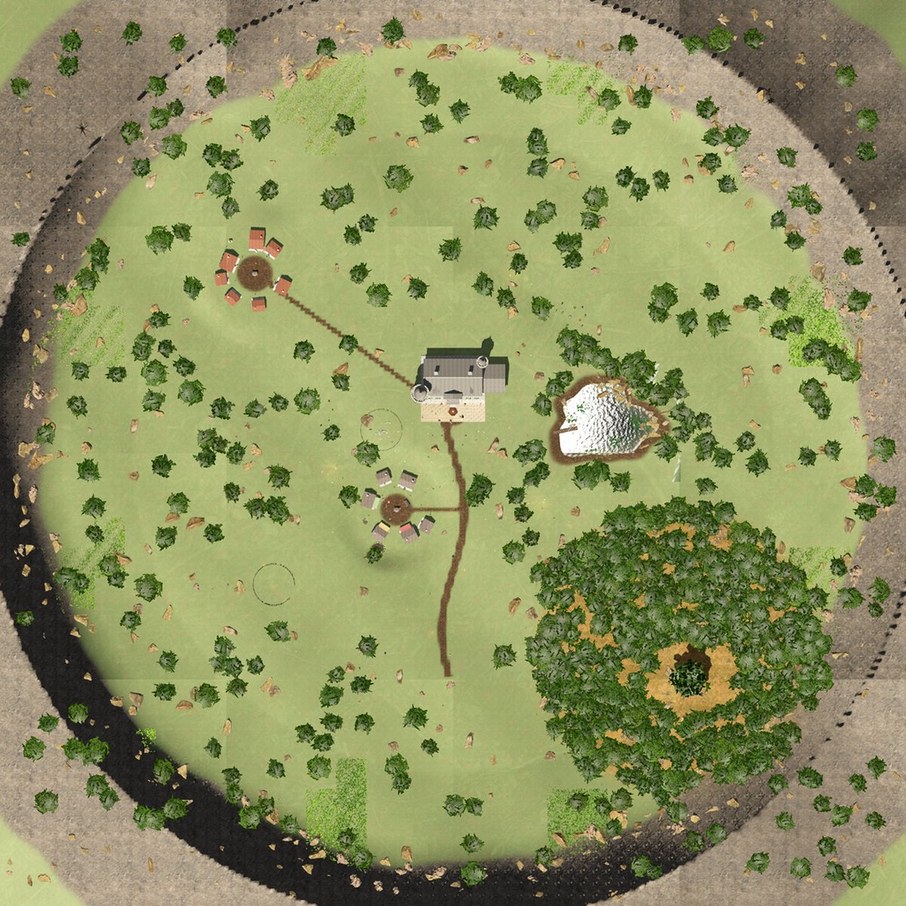
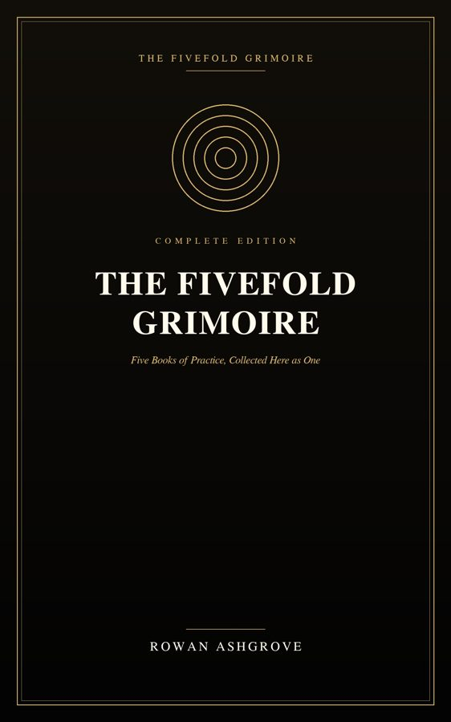

Place of power
1.5.3 What has changed since 1.4
Ashgrove: The Hollow HourEvery clock in Hollowmere stopped at the same hour.
Walk the village, the mere and the Whisperwood as the day turns. Learn the runes from Rowan Ashgrove's books, close the tears in the Reach, and find out what the silence is keeping.
- In development
- Free demo: Prologue + Act I
- Full game R20
- Controller & touch
- 3 save slots
- New Game+
Still in development: the game is a work in progress and changes with each update.
Move your cursor: you carry the lantern.
Version 1.5.3 · what has changed since 1.4
The game as it is now
The updates from 1.4.4 to 1.5.3. The game is still in development, so this keeps changing. They apply to both the full game and the free demo, and saves carry over.
Also: men’s shirts and robes shaped on a man’s frame (1.5.1), subtitles in three sizes with an optional dark band and a “How to play” card (1.5.0). The full list for each version is on the news page.
Version 1.4 · the fourth act
Act IV · The Wide Sky
Over the shepherds’ road to Carn Hollow, the high moor: Sowilo the sun rune, gale-wraiths, the Star Tower and the second of the twelve keys. The apprentice arrives in his own clothes and earns the robe; a new recorded score, footsteps that follow your feet, and smoother frame rates.
Your saves carry over. The new music and the realistic animals are CC BY works by their makers, credited on the credits page. Everything new in 1.4.
The game · added in 1.2
A Reach that lives without you
Weather rolls in over the house. Villagers speak to you by name. The mere has fish worth waiting for, and something has been waiting under the house for a very long time.
Free demo
Prologue + Act I
Free
Windows PCAndroid
- The full opening of the story, to the end of Act I
- Your demo save carries over to the full game
- No account needed to play
About 370 MB on PC, 510 MB on Android · on itch.io
Full game
The complete game
Every act, every chamber
R20about US$1.10
Windows PCAndroidOne purchase, both
- The whole story, Prologue to the final hour
- All spells, places, endings and the undercroft
- Every update since, at no cost
Windows may ask the first time ("unknown publisher"): choose More info, then Run anyway.
Straight from here
Download the demo or buy the full game without leaving the page. Payment is handled safely by itch.io.
An atlas of the Reach
Choose where to stand
The real map of the game, baked from above. Touch a place to read what the Ledger says of it.

Spellcraft from the runes
Every working has a Term
Cast through a circle of Elder Futhark runes, the same practice as the books. Turn a card to read it. Work them together and they answer each other.
Shatter
Thurisaz on a shade held in a Knot: nearly double harm, and the Knot breaks.
Kiln
Ember Hand on a shade standing in your Salt Circle burns half again as hot.
Flare
A Kenaz bolt sets off a shade that Ember Hand has just lit.
From the Ledger's bestiary
Shades of the Reach
Each kind fears one working and shrugs off another. The Ledger keeps note as you learn them.
The people of Hollowmere
They remember you
Bring them what they love and they will count you a friend. Some will walk the Reach beside you.
The 1.2 trailer · the earlier painted look
See the Reach move
The books the game grew from
The Fivefold Grimoire
Five books of practice by Rowan Ashgrove. Each stands on its own; read in order, the work runs unbroken from the first principle to the capstone. Hover a book to turn it in the light.
Start here
Which book first?
- New to the practice: begin with The Unbroken Thread. Every later book assumes it.
- Want to make things: The Waking Vessel for amulets and oils, then The Tended Flame for candle work, which builds on both.
- Want to work with the sky: The Wide Sky, once you have Book I. Written for southern skies.
- Have read the four: The Whole Work ties them into one system, with an index of every working.
Want the fiction first? Ashgrove's Origins are short and need no practice at all.

Five books · 221 pages
The complete edition
All five volumes in reading order, so the practice runs unbroken from the first principle to the capstone. Buy the five books together as a series on Kindle.
Get the series on KindleFiction from the same world
Ashgrove's Origins
Four short stories set around the house, the key and the book. Each is a quick read on Kindle.
Letters from the Reach
Get the news by email
A short letter when there is a new update, a new act or a new book. No more than once or twice a month, and you can leave any time.
Keep the lantern lit
Follow the work
New acts, new books and every update to the game, wherever you like to hear about them.
itch.ioFollow the game for every update and devlog.
YouTubeTrailers, footage from the Reach and the books. Subscribe to the channel.
FacebookNews of every update, new act and new book.
TikTokShort films from the books and the game.
KindleThe Fivefold Grimoire and Ashgrove's Origins.
NewsEvery update to the game and the books, newest first.